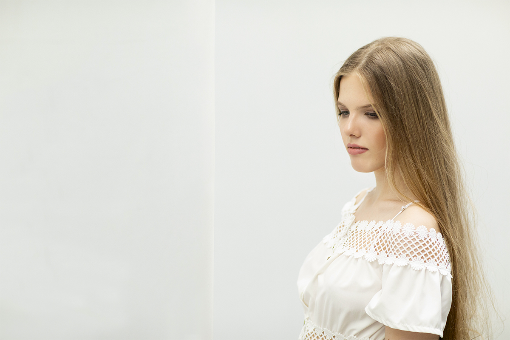
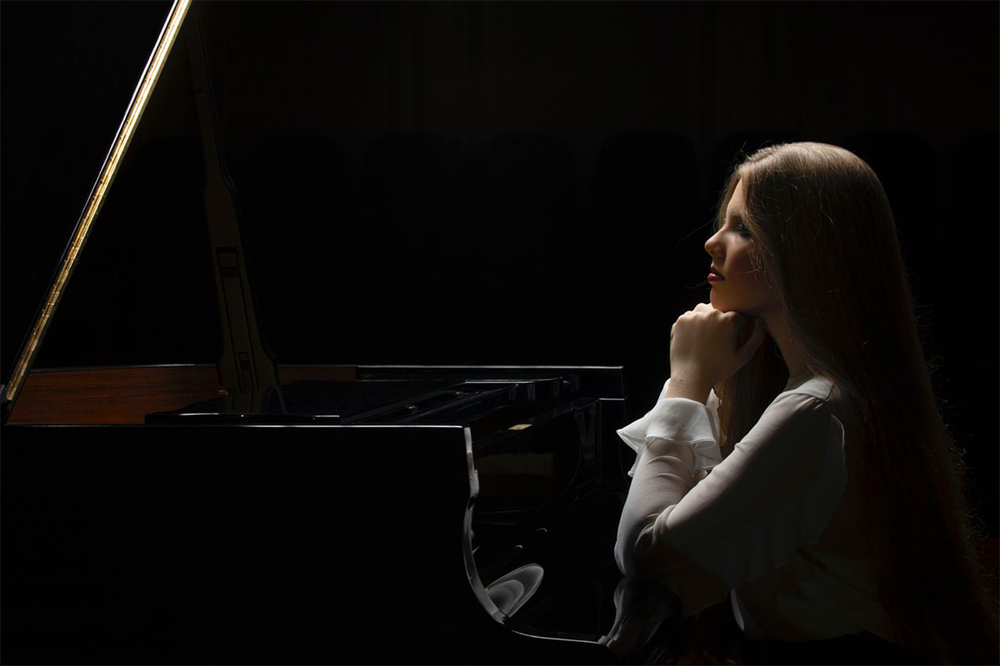
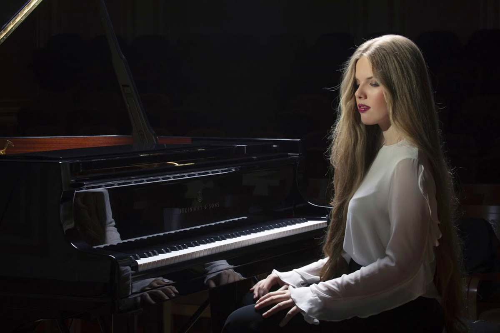
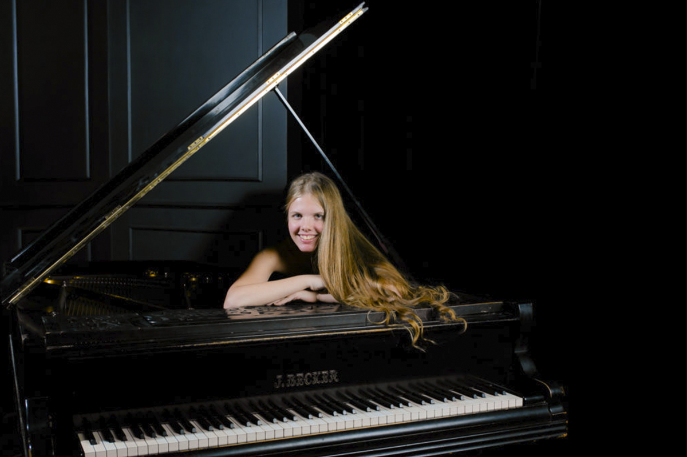

Ева Геворгян
Яркая молодая пианистка, обладающая исключительной техникой и завораживающей выразительностью Ева Геворгян, безусловно, стала любимицей отечественной и зарубежной публики. Как отмечают представители жюри крупнейших фестивалей, сердца слушателей покоряются удивительным сочетанием «мощнейшей игры» и «светлого облика» пианистки. И действительно, стоит закрыть глаза, находясь в зрительном зале, создаётся ощущение, что за роялем маститый Маэстро, а не хрупкая нежная девушка.
Ева Геворгян родилась в 2004 году в Москве. В настоящее время обучается в Центральной музыкальной школе при Московской государственной консерватории им. П. И. Чайковского, в классе Наталии Трулль. Также училась у Станислава Юденича, Уильяма Гранта Наборе и Дмитрия Башкирова в Международной фортепианной академии на озере Комо и у Андреа Бонатты в Фортепианной академии в Аппьяно (Италия). Участвовала в мастер-классах Павла Гилилова, Григория Грузмана, Петра Палечного и Клауса Хельвига.
Стипендиат Международной музыкальной академии в Лихтенштейне, Международного благотворительного фонда Владимира Спивакова и фонда «Новые имена». Лауреат Международного фортепианного конкурса им. Фридерика Шопена для детей и юношества (Шафарния, Польша, 2014; I премия), Международного конкурса «Санта-Чечилия» (Порту, Португалия, 2015; I премия), Международного конкурса пианистов им. Джулиано Пекара (Гориция, Италия, 2016; Гран-при), Международного конкурса юных пианистов Astana Piano Passion (2017; II премия и приз зрительских симпатий), Международного конкурса пианистов им. Роберта Шумана (Дюссельдорф, 2017; I премия), Международного конкурса молодых пианистов Grand Piano Competition (Москва, 2018; пять специальных призов), Кливлендского международного конкурса молодых пианистов (2018; I премия и приз за лучшее исполнение произведения Баха), Международного юношеского конкурса пианистов им. Клиберна (Даллас, 2019; II премия и приз прессы), Чикагского международного музыкального конкурса (2020; Гран-при и приз за лучшее исполнение произведения Шопена), Международного конкурса юных пианистов «Молодой Шопен» (Мартиньи, Швейцария, 2020; I премия) и др. На Международном конкурсе пианистов им. Шопена (Варшава, 2021) была удостоена приза самой юной финалистке.
Участвовала в Музыкальном фестивале Вербье, Международном Шопеновском фестивале в Душники-Здруе (Польша), Фестивале камерной музыки в Эйлате (Израиль), Музыкальном фестивале в Перудже, фестивалях «Звезды на Байкале» (Иркутск), ClaviCologne (Кёльн), «Фортепиано без границ» (Казань) и многих других. Гастролировала в Великобритании, Франции, США, Швейцарии, Германии, Польше, Испании, Италии, Лихтенштейне, Израиле, Армении, Украине, Латвии, Эстонии, на Мальте.
Сотрудничала с такими коллективами, как Симфонический оркестр Мариинского театра, Далласский симфонический оркестр, Государственный академический симфонический оркестр России им. Е. Ф. Светланова, Российский национальный оркестр, Национальный филармонический оркестр Армении, Люцернский симфонический оркестр, Мальтийский филармонический оркестр и Филармонический оркестр Бакэу (Румыния). Работала с дирижерами Валерием Гергиевым, Александром Сладковским, Василием Петренко, Лоуренсом Фостером, Димитрисом Ботинисом, Герхардтом Циммерманном, Эдуардом Топчяном, Петром Грибановым, Илмаром Лапиньшем и др.
В 2019 году получила премию ICMA (International Classical Music Award) в номинации «Открытие года», стала лауреатом Общероссийского конкурса «Молодые дарования России», а также дала сольный концерт в лондонском Альберт-холле.
В 2020-м Евгений Кисин выбрал Еву стипендиатом Фортепианного фестиваля в Руре. А также, Ева стала участницей программ Санкт-Петербургского дома музыки с 2020 года.
В 2021-м молодая исполнительница была удостоена звания «Молодой артист фирмы Yamaha».
Безупречная техника и неподражаемые исполнительские способности Евы Геворгян без сомнения покорят ещё не одно зрительское сердце и, конечно, надолго останутся в памяти. Девушка уверенно прокладывает путь на вершину мирового музыкального Олимпа и, казалось бы, совершает невозможное, продолжая окутывать свою игру всё большей и большей выразительностью, виртуозностью и мастерством.
Советуем не упускать возможности услышать и увидеть исполнение Евы Геворгян воочию, чтобы лично насладиться сиянием настоящего бриллианта в мире фортепианной музыки!